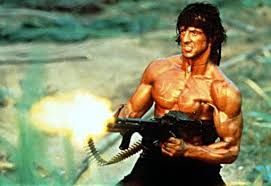

Stallone es reconocido mundialmente como uno de los principales actores del cine de acción de Hollywood. Ha dado vida a dos personajes icónicos de la historia del cine: a Rocky Balboa, un desconocido boxeador de Filadelfia que contra todo pronóstico se convirtió en campeón; y a John Rambo, un atormentado ex boina verde veterano de la guerra de Vietnam, especializado en guerrilla, supervivencia y combate
Stallone nació en Nueva York, hijo de Jacqueline France Labofish, una trapecista, peluquera, astróloga, maestra de danza y representante de mujeres profesionales de la lucha libre, llegando a regentar un gimnasio femenino, y Frank Stallone, un peluquero
En 1974 se casó con la actriz Sasha Czack. Se divorciaron en 1985, año en el que contrajo matrimonio con la actriz danesa Brigitte Nielsen. Stallone y Nielsen se separaron en el año 1987 y posteriormente se divorciaron.
Stallone no obtuvo fama hasta su papel protagonista en el éxito mundial Rocky, de 1976. El 24 de marzo de 1975, vio el combate entre Muhammad Ali y Chuck Wepner, pelea en la que se basa la idea fundamental de Rocky. La noche de la pelea, Stallone, inspirado, fue directamente a su casa y, al cabo de tres días, ya había escrito el libreto: intentó venderlo con la intención de interpretar el papel principal.
| fecha de inicio (de la vinculacion) | fecha de terminacion (de la vinculacion) | nombre de la empresa | cargo |
|---|---|---|---|
| 9 septiembre de 1971 | 20 de diciembre de 2017 | The Expendables | director |
En los años 1960, Stallone estudió en el American College of Switzerland, Leysin y finalmente, en la Universidad de Miami durante tres años Pero a pesar de que tuvo problemas en el colegio y fue expulsado de varios centros, en Filadelfia destacó como practicante de fútbol
Oficial de la Orden de las Artes y las Letras
Premio César
Premio Saturn
Razzie al peor actor (1985, 1986 y 1989) y al peor director (1986)
Golden Raspberry Award for Worst Screenplay (1986)